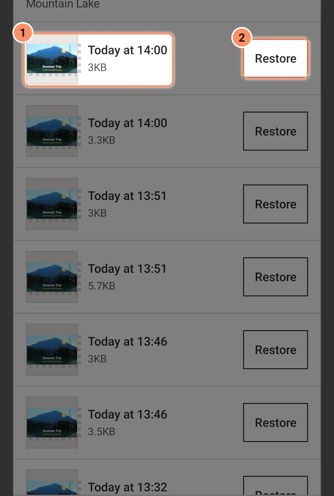
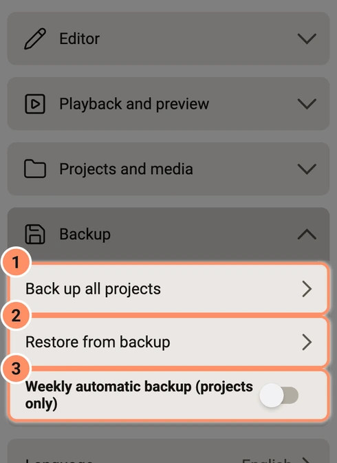

Projek, sandaran dan import
Cara projek disimpan, versi dan pemulihan ranap, sandaran, media hilang, mengimport fail projek dan tempat fail disimpan.
Pada halaman ini
Menyimpan
Tiada butang Simpan. Selepas setiap perubahan, editor menulis projek ke telefon sejurus kemudian, dengan cara yang tidak boleh meninggalkan fail separuh ditulis. Semasa anda sedang menyeret, draf juga ditulis. Jika penyimpanan gagal kerana telefon penuh, aplikasi berkata "Tidak dapat menyimpan projek. Kosongkan sedikit ruang storan." dan cuba lagi.
Sejarah versi
Aplikasi menyimpan versi terdahulu bagi setiap projek. Versi disimpan apabila anda membuka projek, apabila anda menutupnya, dan selepas simpan jika versi terbaharu berusia sekurang-kurangnya dua minit. Ia juga menyimpan satu sebelum pemulihan dan sebelum anda menjawab soalan pemulihan ranap. Aplikasi menyimpan 20 versi terbaharu dan versi terkini bagi setiap tujuh hari terakhir, dan memadam yang lebih lama.
Bukanya dari menu kad projek (Sejarah versi) atau dalam tetapan projek editor (Versi terdahulu). Setiap baris mempunyai lakaran kecil, masa ("Hari ini pada 14:05", "Semalam pada 09:30") dan Pulihkan. Pemulihan bertanya dahulu: "Projek kembali kepada keadaan ... Keadaan semasa disimpan dalam Sejarah versi, jadi tiada yang hilang."

Pemulihan ranap
Jika aplikasi berhenti secara tidak dijangka semasa projek dibuka, permulaan seterusnya menunjukkan AbsentMotion ditutup secara tidak dijangka dengan sebab dalam satu ayat, seperti "Ia kehabisan memori semasa mengeksport." Jika terdapat suntingan yang belum disimpan ia bertanya "Pulihkan suntingan terakhir anda ke ...?" dengan Pulihkan dan Buang. Draf yang dibuang kekal dalam sejarah versi projek.
Setiap ranap juga ditulis ke Log ranap dalam Tetapan: masa, sebab satu ayat, versi aplikasi dan Android, model telefon, apa yang anda sedang lakukan, dan butiran teknikal. 20 yang terakhir disimpan. Tiada apa-apa yang dihantar ke mana-mana; anda boleh menyalin satu untuk menghantarnya sendiri.
Projek yang rosak
Jika fail projek tidak dapat dibaca, kadnya berkata Rosak — pulihkan versi. Ketik untuk memulihkan versi terdahulu, atau padamkannya.
Fail media
Foto, video dan audio yang anda tambah secara lalai disalin ke dalam projek, jadi projek tidak bergantung pada galeri anda. Matikan ini dengan Simpan salinan media yang diimport dalam projek dalam Tetapan jika anda mahu menjimatkan storan.
- Kumpul media ke dalam projek (menu kad projek) menyalin setiap fail yang masih dibaca oleh projek dari luar foldernya sendiri ke dalam projek. Ia mula-mula cuba mencari fail yang hilang.
- Media hilang. Apabila fail tiada lagi pada telefon, aplikasi mencarinya dalam pustaka foto, video dan audio anda mengikut nama dan saiz tepatnya apabila projek dibuka, dan menggunakannya jika hanya satu fail sepadan. Untuk membetulkannya secara manual, pilih lapisan, buka Maklumat Media dalam menu lapisan dan pilih Tukar fail media. Jika anda mengeksport dengan fail yang hilang, aplikasi memberi amaran dan tidak menyertakan lapisan tersebut.
Sandaran dan pemulihan
Dalam Tetapan, kumpulan Sandaran:
- Sandarkan semua projek menghasilkan satu fail,
AbsentMotion-backup-diikuti dengan tarikh dan masa, berakhir dengan.absbackup, dalam Documents/AbsentMotion. Ia mengandungi semua projek dengan sejarah versinya, templat dengan medianya, pratetap, palet warna anda, fon yang diimport, hasil AI dan semua media yang disimpan. Ia memerlukan ruang kosong kira-kira saiz kandungan ditambah 50 MB. Fail itu kekal pada telefon walaupun anda menyahpasang AbsentMotion; salin ke komputer atau perkhidmatan awan untuk menyimpannya dengan selamat. - Sandaran automatik mingguan (projek sahaja) dimatikan secara lalai. Apabila dihidupkan, beberapa saat selepas aplikasi dibuka, jika tujuh hari berlalu sejak sandaran terakhir, ia menulis
AbsentMotion-weekly-...absbackupdengan projek sahaja (tiada media) dan memadam fail mingguan sebelumnya. Sandaran manual tidak pernah dipadam oleh aplikasi. - Pulihkan dari sandaran meminta anda memilih fail sandaran. Projek yang sudah ada di sini dan sama dibiarkan; projek dengan nama sama tetapi kandungan berbeza dipulihkan sebagai salinan berasingan. Tiada yang sedia ada ditimpa. Pemulihan boleh dihentikan dan dijalankan semula kemudian.

Mengimport fail projek
Anda boleh membuka fail projek dari aplikasi lain (contohnya pengurus fail) dengan Kongsi atau Buka dengan. Untuk butang import pada skrin utama, hidupkan Tunjukkan kad import dalam senarai projek: kad Pilih fail kemudian muncul di atas projek anda.
| Fail | Apa yang anda dapat |
|---|---|
.absproj yang dibuat oleh AbsentMotion | Projek biasa dengan medianya |
Pakej projek dari editor lain (.amproj) | Setiap babak menjadi templat, dan sebarang aset kekal sebagai aset |
| Fail XML babak biasa | Projek biasa. Pautan media tidak diikuti demi keselamatan, jadi media dipaparkan sebagai hilang melainkan ia boleh ditemui dalam galeri. |
Fail Adobe Animate (.fla) | Projek biasa: lihat Fail Adobe Animate |
Kesan yang ada pada AbsentMotion ditukar. Kesan yang tidak ada kekal dalam fail tetapi tidak dilukis. Selepas import, laporan menyenaraikan hanya perkara yang tidak dapat dipindahkan: kesan yang tidak dapat dijalankan, tetapan yang tidak dapat dipindahkan, media tidak ditemui dan fon tidak dipasang. Apabila semuanya berjaya dipindahkan, tiada laporan dipaparkan. Fail sandaran (.absbackup) dipulihkan dari Tetapan, bukan diimport di sini.
Terdapat had untuk melindungi telefon. Contohnya, pakej boleh mempunyai paling banyak 2000 fail dan 32 projek, bersaiz paling banyak 2 GB selepas dibuka, dan babak memerlukan saiz paling banyak 16384 piksel dan kadar bingkai dari 1 hingga 240. Aplikasi menyatakan peraturan mana yang dilanggar oleh sesuatu fail.
Fail Adobe Animate
AbsentMotion mengimport fail .fla yang disimpan oleh Adobe Animate atau Flash CS5 dan yang lebih baharu. Bukanya seperti mana-mana fail projek yang lain: dengan Pilih fail, Kongsi atau Buka dengan. Pada komputer, gunakan File, Import Project… atau jatuhkan fail ke atas tetingkap; di sana fail .xfl juga berfungsi, selagi seluruh kandungan foldernya berada di sebelahnya. Pada telefon, bungkus folder XFL ke dalam fail ZIP dan import fail itu.
Fail itu menjadi satu projek dengan saiz pentas, kadar bingkai dan warna latar belakang daripada fail Animate, dan adegannya dimainkan satu demi satu.
- Yang dibawa masuk: bentuk dengan isi warna padu, kecerunan dua warna dan gambar, serta garisannya; simbol, setiap satu sebagai kumpulan dengan garis masanya sendiri; gambar; tween klasik sebagai bingkai kunci, bersama pelembutannya; alfa, tint dan kecerahan; lapisan topeng; dan bunyi MP3 pada garis masa utama.
- Ditinggalkan: medan teks, ActionScript, penapis, mod blending, kesan warna lain, laluan panduan gerakan, lapisan kamera, komponen dan klip terkompil, video, pose tulang (IK) dan simbol pustaka yang tiada di pentas. Tween bentuk menunjukkan bentuk permulaannya dan tween gerakan menunjukkan bingkai kunci pertamanya. Kecerunan dengan lebih daripada dua warna mengekalkan dua, garisan putus-putus dan garisan istimewa lain dilukis penuh, dan pelembutan yang tidak dapat dibaca menjadi gerakan lurus.
Selepas import, laporan menyenaraikan kedua-duanya, dengan kiraan untuk setiap satu: Diimport daripada fail Animate dan Tidak diimport (dipaparkan tanpanya).
Fail .fla lama daripada Flash CS4 dan sebelumnya menggunakan format lain. Aplikasi kemudian berkata: "Fail .fla ini disimpan oleh Flash CS4 atau yang lebih lama. Hanya fail .fla daripada Flash CS5 dan yang lebih baharu boleh diimport."
Format fail dan lokasi
- Projek ialah satu fail teks XML. Media terletak di sebelahnya dalam folder peribadi projek.
.absprojialah ZIP:project.xml,manifest.jsondan fail media di bawahmedia/. Model 3D menyimpan failnya dalam folder..absbackupialah ZIP dengan setiap projek, pratetap, templat, fon dan fail media.- Storan peribadi aplikasi (dibuang apabila anda menyahpasang): projek dan lakaran kecilnya, sejarah versi, media yang disimpan, templat, pratetap, palet warna, draf ranap, log ranap, fon yang diimport, model kapsyen, salinan pratonton dan hasil AI.
- Storan dikongsi (kekal apabila anda menyahpasang): Movies/AbsentMotion (video), Pictures/AbsentMotion (GIF, bingkai pegun, jujukan imej dan gambar palet), Music/AbsentMotion (eksport audio), Documents/AbsentMotion (
.absproj, XML, sandaran dan fail palet) dan DCIM/AbsentMotion (foto dan video dari kamera dalam aplikasi).
AbsentMotion tidak menggunakan kebenaran luas "semua fail": ia menyimpan melalui storan media Android.